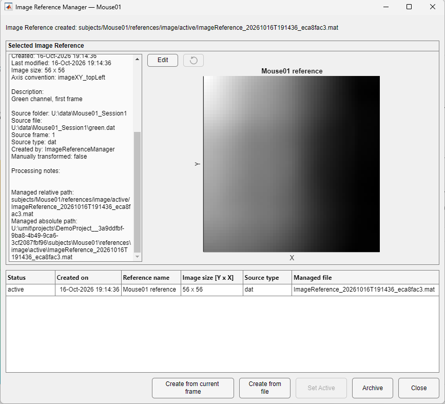
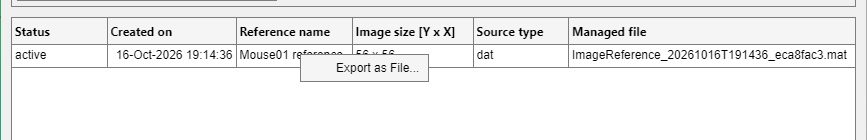
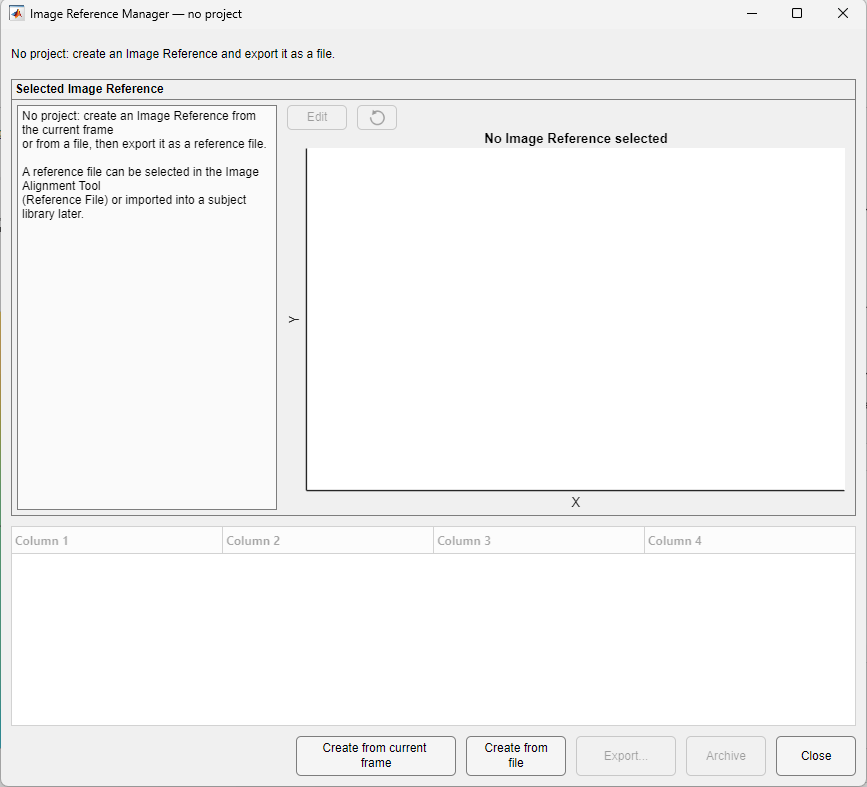

An image reference is a fixed 2-D image used to align recordings consistently with the Image Alignment Tool. With a project, references are kept in each subject's reference library, so all sessions of a subject can share one. Without a project, a reference is saved as a standalone reference file. A project is not required.
Load image data and choose Utilities > Image Reference. The manager opens in one of two modes:
DataViewer passes the current 2-D frame, the source frame number, the source file and, in library mode, the project, subject and session.

| Control | Purpose and persistence |
|---|---|
| Reference table | Lists active or archived references: status, creation time, name, image size, source type, and managed file. |
| Preview and metadata | Shows the selected image and its provenance; read-only until Edit. |
| Create from current frame | Captures the frame received from DataViewer, asks for a name, description and processing notes, and adds the reference to the subject's library. |
| Create from file | Adds a supported 2-D image (TIF, MAT, UMT, or a reference file exported by UMIT) to the library. |
| Edit / Apply | Adjusts reference framing after confirmation and creates the managed replacement required by store rules. |
| Set Active | Makes the selected reference the subject's active reference. |
| Archive / Restore | Archives without erasing history, or restores an archived reference. Archiving an active reference may require choosing a replacement. |
| Export as File... (right-click a row) | Saves the selected library reference as a standalone reference file, for use without the project or on another computer. |


The reference file can then be selected in the Image Alignment Tool (source Reference File), for this folder and others, or imported into a subject library later.
A folder that was aligned without a project keeps a copy of its reference image in DataParams.mat. Once the folder is bound to a project session, Management > Project > Add Folder Reference to Library... in DataViewer compares that image with the subject's library:
The folder itself is never changed. DataViewer also makes this offer quietly after a folder's project binding changes.
The manager changes the reference library or writes a reference file; it does not change the displayed pixels or the folder's alignment.
Preserve the managed history
Library references are identified by UUID. Do not edit or replace their files directly. Archive and restore them only through the manager.